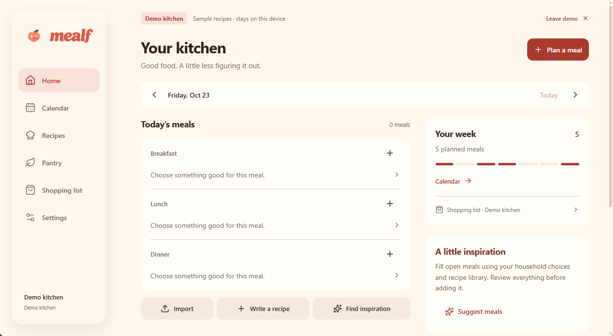
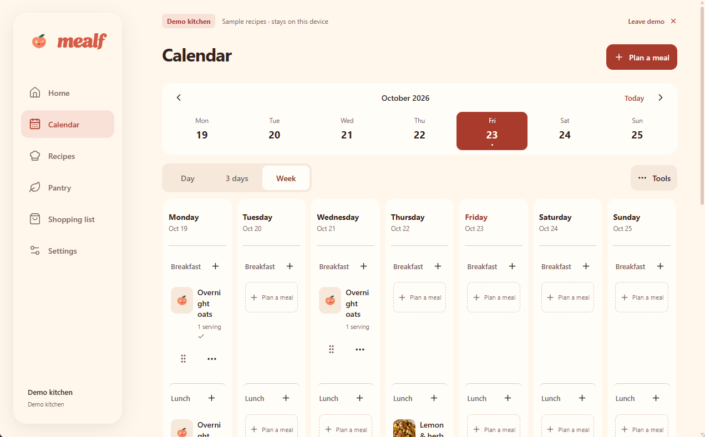
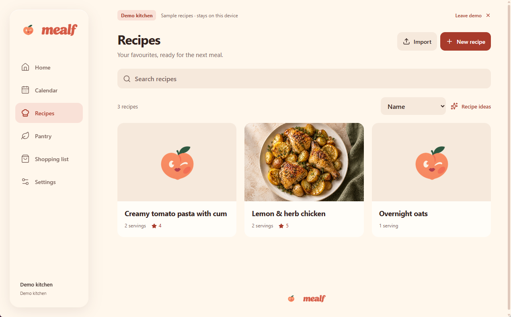
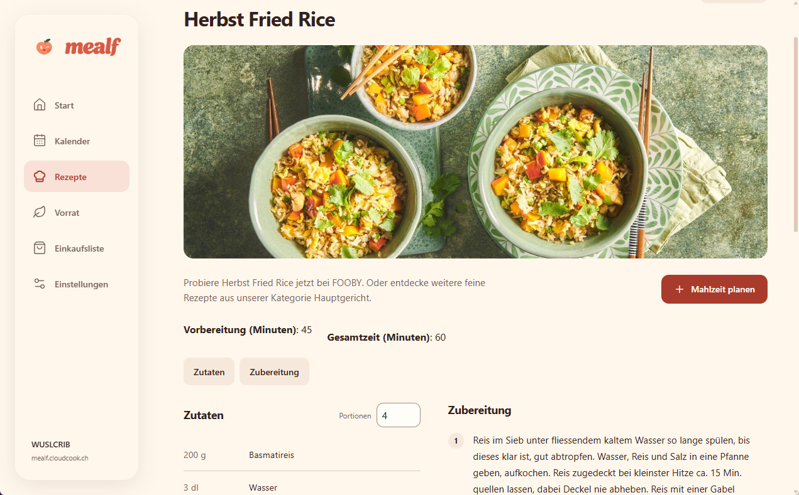
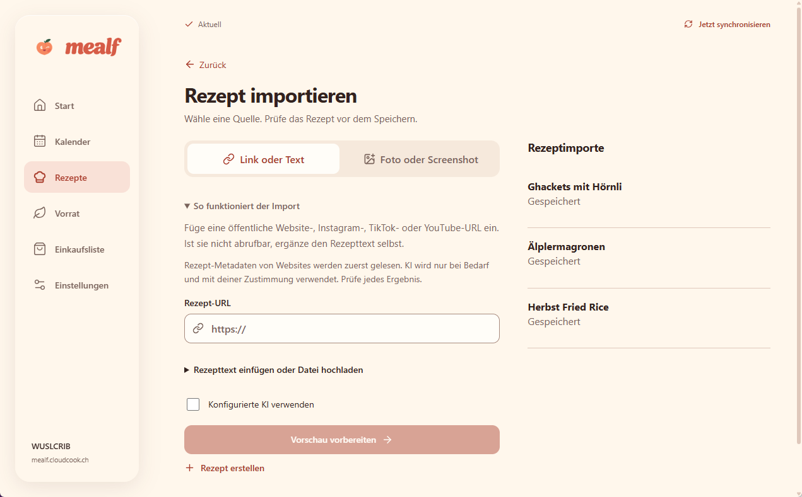
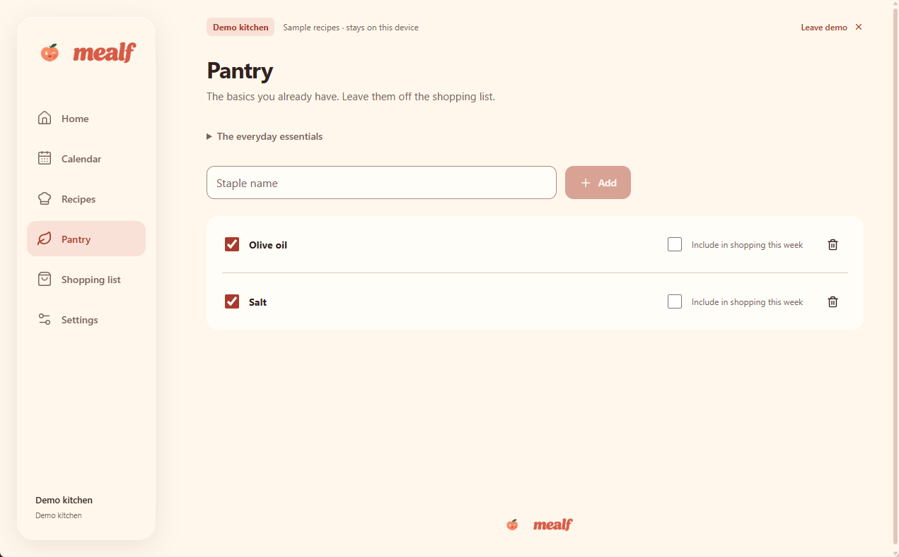
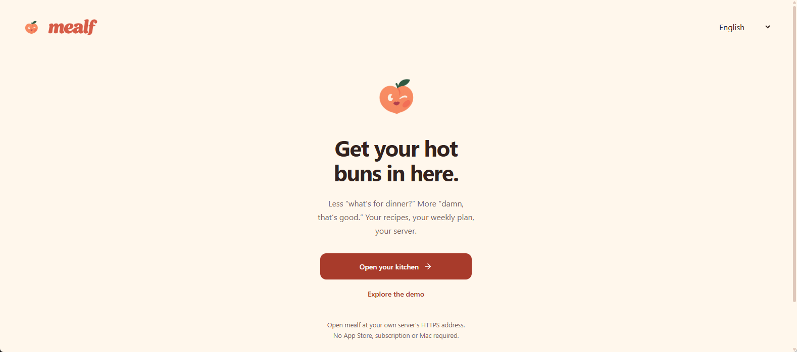

Meals you’d
like to fork.
The self-hosted meal planner for people who like it hot, saucy, and on the kitchen table. Save recipes, plan your week, and get your Bring! shopping list ready for a good time.
Meal planning.
With benefits.
Recipes. Meal plans. A well-stocked pantry.
Take a look around the real Mealf.

Your kitchen, at a glance.
See today’s meals, your week, and shortcuts to import a recipe or plan something good.

Make room for your next dinner date.
Switch between Day, 3 days, and Week views and plan breakfast, lunch, and dinner.

Your little black cookbook.
Search your collection, sort your recipes, and keep the ones worth seeing again.

All the delicious details.
See ingredients and preparation side by side, change portions, and plan the recipe as a meal.

Less teasing. More tasting.
Import a link, text, photo, or screenshot. Review the recipe before saving, with optional configured AI.

Already got the good stuff?
Mark the staples you have and choose what to include in this week’s shopping.

Get your hot buns in here.
Open your own kitchen or explore Mealf’s demo from the welcome screen.
Original Mealf screens. Demo and household views in English and German. Get to know Mealf
Food porn.
Happy endings.
You’ve watched that saucy TikTok six times. Time to stop teasing yourself. Give your AI the recipe text, notes, or transcript; review it, save it, and put something hot on the table.
See inspiration become a recipeWe both know why you saved that creamy pasta.
Ingredients, servings, and clear steps. We love good direction.
Review it. Save it. Invite it back tomorrow.
Your server.
Your rules.
Nice rack.
Mealf is self-hosted, so your recipe collection and meal planning have a home on infrastructure you control. No mandatory hosted service. No analytics or tracking.
Currently a development preview. See what’s ready and what’s still cooking.
Your server.
Your kitchen.
Save this full configuration as compose.yml. Set BASE_URL to your public HTTPS address and start Mealf with Docker Compose.
- Docker with Compose v2
- Persistent storage for your recipes
- Your public HTTPS hostname
The moving :preview tag tracks the latest published preview. pull_policy: always checks for a new image when you run docker compose up -d.
Mealf is a development preview. Read the installation guide.
name: mealf-preview
services:
mealf:
image: ghcr.io/cloudcookch/mealf-server:preview
pull_policy: always
restart: unless-stopped
ports:
- "5152:5152"
environment:
DATA_DIR: /data
BASE_URL: https://mealf.example.com
TZ: Europe/Zurich
TRUSTED_PROXY_CIDRS: ""
command:
- /bin/sh
- -c
- |
umask 077
exec python -m uvicorn aircooker.app:create_app \
--factory --host 0.0.0.0 --port 5152 \
--workers 1 --no-access-log \
--forwarded-allow-ips "$${TRUSTED_PROXY_CIDRS}" \
--timeout-graceful-shutdown 30 --limit-concurrency 64
healthcheck:
test:
- CMD
- python
- -c
- "import urllib.request; urllib.request.urlopen('http://127.0.0.1:5152/api/v1/system/health', timeout=3)"
interval: 30s
timeout: 5s
start_period: 15s
retries: 3
volumes:
- mealf-data:/data
read_only: true
tmpfs:
- /tmp:size=64m,mode=1777
cap_drop:
- ALL
security_opt:
- no-new-privileges:true
pids_limit: 100
mem_limit: 512m
stop_grace_period: 40s
volumes:
mealf-data:
docker compose up -d
docker compose logs --tail=100 mealfPublish your HTTPS hostname through Cloudflare Tunnel, then open it and use the private setup_token from the logs for first-run setup. Keep the mealf-data volume when updating.
The morning-after
questions.
Before we take this back to your server.
What can I do with Mealf?
Keep your recipes together, plan meals on your calendar, manage pantry items, and prepare shopping lists. Optional Bring! and AI integrations connect the rest of your routine.
How does the AI recipe conversion work?
Configure your own supported AI provider in Mealf. Give it recipe text or notes from the inspiration you found, then review the structured ingredients and steps before saving. Social imports don’t fetch authenticated videos or automatically transcribe them; you can supply text yourself.
Can I use my Bring! shopping list?
Mealf includes an optional Bring! adapter for your shopping list. Configure it on your instance to connect your planning with Bring!. The integration is still in development; check the integration guide for setup and current validation status.
Is this a dating app?
Only if your type is hot pasta. Mealf brings your recipes, calendar, and shopping list together. The chemistry is mostly garlic.
Can Mealf handle a quickie?
Absolutely. The 25-minute pasta kind. Add the recipe to your meal plan and get the ingredients ready in Bring!. You can still go back for seconds.
What’s with the name?
Meal meets MILF. Meals you’d like to fork. The peach isn’t an accident either.
Where do I start?
Use the self-hosting guide for the Docker Compose YAML, Cloudflare Tunnel setup, and your first sign-in. Mealf is a development version with remaining release work.